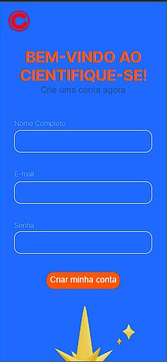
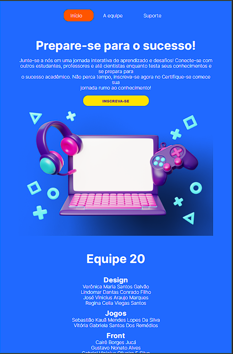
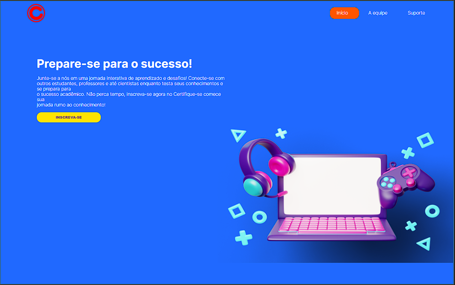
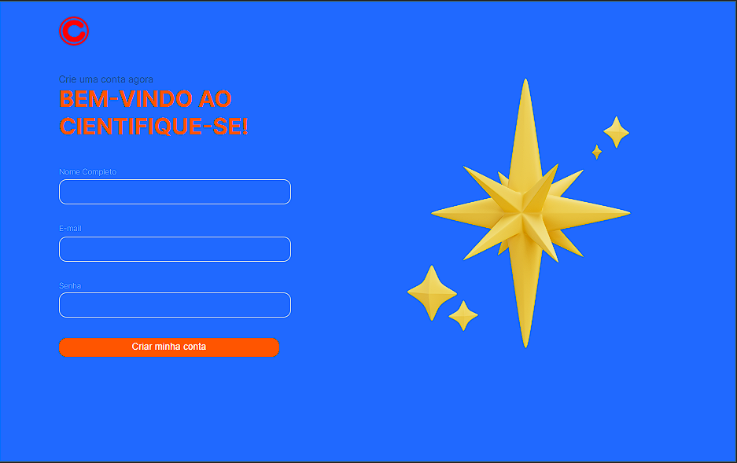
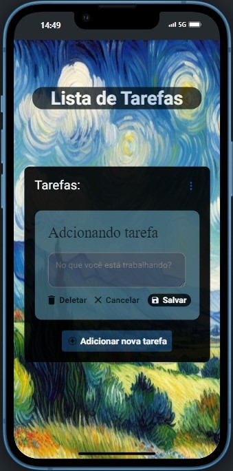
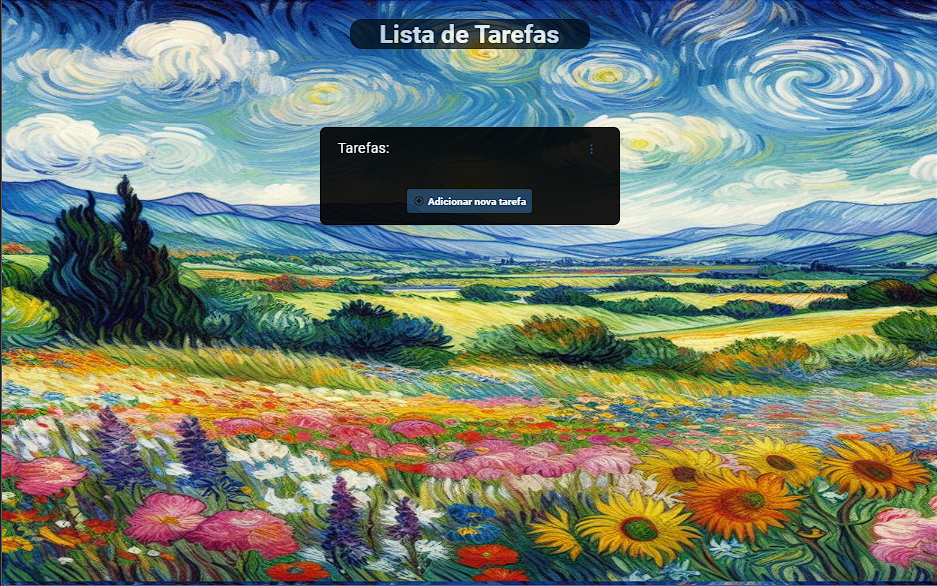

Olá, eu sou Widson Martins.
Desenvolvedor front-end
Tenho 21 anos, com experiência em JavaScrip, HTML, CSS, TypeScript e React.
 Github
Github Linkedin
Linkedin



Landing-page
Feito para um desafio em conjunto com outras trilhas do progama inova maranhão, como pratica dos estudos em HTML, CSS e JavaScript.


To-Do list
Feito para um desafio em trio do progama inova maranhão, como pratica dos estudos em HTML, CSS, JavaScript e TypeScript.